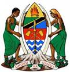

JAMHURI YA MUUNGANO WA TANZANIA
OFISI YA RAIS-TAMISEMI

Namba za simu. Shule ya Sekondari KISHOJU,
Mkuu wa Shule-0752 692425. S.L.P 11, MULEBA-KAGERA
Makamu Mkuu wa Shule0764 339667. Tarehe 29/03/2022.
Mwl. wa Nidhamu0753 758544.
Mzazi/Mlezi wa …………………………………………………... (Jina la Mwanafunzi)
S.L.P……………………………………………………………
YAH: MAELEKEZO YA KUJIUNGA NA SHULE YA SEKONDARI KISHOJU
HALMASHAURI YA WILAYA YA MULEBA MKOA WA KAGERA MWAKA 2022/2023.
Nafurahi kukutaarifu kuwa mwanao amechaguliwa kujiunga na kidato cha Tano katika shule ya
Sekondari Kishoju mwaka 2022 Tahasusi ya……………………...………….
Shule ya Sekondari KISHOJU ipo umbali wa kilometa 5 kusini mwa mji wa MULEBA. Usafiri
wa pikipiki kutoka MULEBA mjini unapatikana katika kituo cha basi kwa sh 1,500/= mpaka
2000/=.
Muhula wa masomo utaanza tarehe 05/09/2022. Hivyo mwanafunzi anatakiwa kuripoti Shuleni
tarehe 05/09/2022 Mwisho wa kuripoti ni tarehe 19/09/2022. (piga simu ili kujua kama kuna
mabadiliko ya tarehe ya kufungua).
A: KARO
Unatakiwa kulipa karo ya shule Tsh. 70,000/= kwa mwaka, au unaweza kulipa Tsh. 35,000/= kwa Muhula.
Karo iwekwe kwenye A/C Na.32001200049 jina la akauntini MDC KISHOJU SECONDARYSCHOOL-
NMB
Pamoja na karo kuna michango inayotakiwa kulipwa katika akaunti iliyotajwa nayo ni:-
i. Tsh 20,000 kwa ajili ya taaluma
ii. Tsh. 15,000 kwa ajili ya huduma ya afya
iii. Tsh. 15,000/= Pesa yaUkarabati wa samani
iv. Tsh. 5,000/= ,Pesa ya tahadhari (Haitarudishwa)
v. Tsh. 6,000/= Pesa ya kitambulisho na picha
vi. Tsh 2,000/= Pesa ya nembo (inalipwa mara moja)
vii. Mchango wa posho ya wapishi, walinzi n.k Tsh. 30,000/=.
viii. Tsh. 20,000 pesa ya mitihani ya kujipima
ix. Tsh. 5,000 /= kwa ajili ya Umeme
MWANAFUNZI ATALIPA TSH. 188,000/= KWA MWAKA AU 153,000/= KWA NUSU MWAKA.
NB: MICHANGO YOTE YA SHULE ILIPWE BANK NA SIYO KUTUMA KWA NJIA YA SIMU.
(B) MAHITAJI YA KUJANAYO SHULENI.
Mwanafunzi anatakiwa kuja na vifaa vifuatavyo:-
1. Jembe 1 na mpini ,Dekio(squeezer/drier) yenye mpini wake na reki 1, kwa ajili ya usafi. (hii ni kwa
wasichana tu).
2. Fyekeo/ kwanja na brashi ngumu yenye mpini, squeezer yenye mpini kwa ajili ya usafi pamoja na kotama 1.
( hii ni kwa wavulana tu)
3. Mfagio wa soft broom 1, na chelewa ndefu ya nje (fagio la wima) kwa wote.
4. Ndoo 2 ndogo zenye mifuniko.
5. Vifaa vya chakula: bakuli ,sahani, kikombe na kijiko pamoja na vifaa vya usafi binafsi mf: mswaki,
dawa ya meno kubwa, dawa ya viatu kubwa, mafuta ya kujipaka kopo kubwa, sabuni za kufua na
kuoga, kanda mbili/yebo na taulo.
6. Kwa wasichana: pair moja ya kitenge, na vifaa kwa ajili ya usafi wakimaumbile.(kanga hairusiwi)
7. Ream 2za karatasi za A4 zilizoandikwa (DOUBLE A PREMIUM) kwa mwaka.
8. . Kokotoo la hesabu (Scientific Calculator) kwa wanaosoma Hesabu. (HGE, EGM)
9. Mathematical set kwa wale wanaosoma geografia na hesabu
10. Vitabu vya masomo ya tahasusi yake (orodha imeambatanishwa mwanafunzi atapaswa kuchagua
kwa mjibu wa tahasusi yake.
11. Godoro lenye urefu futi 6 upana futi 2 ½.
12. Taa ya betri / sora kwa tahadhali ya umeme ukikatika. (ISIWE YA KUCHAJI KWENYE UMEME)
13. Faili la nailoni (plastic file) la kutunzia mitihani, mazoezi na majaribio.
Aidha kwa wanaotoka mbali na watakaopenda vifaa namba 1,4, 5,7,8,9 na 11 unaweza kuvipata ndani ya
duka la Shule. Vilevile Mwanafunzi hatapokelewa endapo hatakuja na taa kwa tahadhari ya umeme
ukikatika.
SARE YA SHULE.
Unatakiwa kuwa na mavazi yafuatayo;-
a) WASICHANA.
i. Sketi mbili nyeusi za marinda ya kuelekea upande mmoja upana wa marinda ni inchi mbili (Knife
edge)iwe na marinda kumi Upana wa mkanda usizidi inchi mbili. Urefu wa sketi kutoka kwenye
magoti iwe inchi kumi chini ya magoti, kitambaa kisichoonyesha.(transparent).
ii. Shati mbili nyeupe mikono mirefu aina ya tetron (Tomato), lenye vishikizo vya kawaida na mfuko
mmoja upande wa kushoto.
iii. Soksi nyeupe jozi mbili. (isiwe stocking/ free style) medium size
iv. Tai moja rangi Nyeusi yenye mistari nyeupe
v. Sweta rangi ya zambarau yenye nembo ya shule.
vi. Viatu pair mbili rangi nyeusi vya kufunga kwa kamba (soli fupi) isiwe boot shoes
vii. T-shirt 2 rangi ya Nyekundu zenye kola za mstari mweusina kwenye mikono, zenye nembo ya
shule.
viii. Track suit rangi nyekundu kwa ajili ya usiku (isiwe ya kubana na isiwe ya kofia)
ix. Kamusi ya Kiingereza kwa kiingereza (Advanced Dictionary) (HGL , HKL)
x. Madaftari makubwa (Counter Books 7) kwa ajili ya masomo saba na kalamu za wino za kutosha.
xi. Njoo na shuka jozi mbili, blanketi moja na mto mmoja na foronya (Mashuka yawe rangi ya pinki
na yawekewe alama kuondoa usumbufu wa kupotea). Pia aje na chandarua.
xii. Kwa wanafunzi wa kiislamu watatakiwa kuwa na sketi nyeusi ndefu mbili zenye malinda,
jarabibi nyeupe na panjabi mbili nyeupe zenye urefu sawa na shati. Kwa shughuli za nje atatakiwa
kuja na sketi mbili ndefu za rangi ya zambarau pamoja na jarabibi na Panjabi za rangi ya
Nyekundu.
xiii. Kwa wanafunzi wengine utatakiwa kuwa na sketi mbili rangi ya zambarau (ya kuiva) yenye
mshono wa marinda sawa na sketi ya darasani kwa ajili ya shughuli za nje.
b) WAVULANA.
i. Suruali mbili nyeusi zenye urefu wa kufunika kisigino lakini siyo kuikanyaga( iwe inchi 19
mzunguko wa chini) . iwe ya HESHIMA. (isiwe ya kubana wala modo ).
ii. Shati mbili nyeupe (aina ya tomato) mikono mirefu, zenye vishikizo vya kawaida na mfuko
mmoja upande wa kushoto.
iii. Mkanda mweusi wa ngozi upana usiozidi inchi mbili (usiwe namadoido)
iv. Vazi baada ya saa za masomo ni suruali nyeusi na T-shirt yenye nembo ya shule hivyo uwe na
suruali mbili za ziada kwa ajili ya shughuli za nje.
v. Jozi 2 za viatu vyeusi vya ngozi visiwe buti. Viatu visiwe na madoido viwe na visigino vifupi na
vyenye kufungwa kwa kamba.
vi. Soksi nyeusi jozi mbili au zaidi.
vii. Tai moja kama ilivyoainishwa kwa wasichana
viii. Sweta rangi ya zambarau yenye nembo ya shule
ix. T- shirt2 rangi ya Nyekundu zenye kola kama ilivyoainishwa kwa upande wa wasichana.
x. Track suit rangi ya blue kwa ajili ya usiku (isiwe ya kubana na isiwe ya Kofia)
xi. Kamusi ya Kiingereza kwa kiingereza (Advanced Dictionary) ( HKL, HGL)
xii. Kalamu za wino za kutosha
xiii. Madaftari makubwa (Counter Books 7 ) kwa ajili ya masomo saba.
xiv. Njoo na shuka pair mbili, Blanketi moja na mto mmoja na foronya (Mashuka yawe yarangi ya
Blue) na yawekewe alama kuondoa usumbufu wa kupotea. Pia aje na chandarua
Shuka la kiamasai HALITAKIWI SHULENI.
SARE ZINZOPATIKANA KWENYE DUKA LA SHULE NI:-
S/No AINA YA SARE KIASI
1 SWETA 15,000
2 T-SHIRT 2 30,000
3 TAI 5,000
4 T-SHIRT YA MICHEZO 8,000
NB: Kama mzazi atakumbana na changamoto kuhusu rangi ya sare za shule zilivyotajwa tafadhali
wasiliana na uongozi kabla ya kufanya manunuzi ili kuondoa usumbufu wa kuwa na aina ya nguo
(sare) tofauti na inayotakiwa. Pia Mwanafunzi atakayeripoti na nguo ambazo hazikuainishwa katika
fomu hii atalazimika kuzirudisha nyumbani.
c) WOTE:
i. Nywele fupi zisizozidi sentimeta moja
ii. Hairuhusiwi kubadili ngozi (kujichubua)
iii. Rangi kwenye kucha, wanja, ina na urembo mwingine kwa wasichana ni marufuku.
iv. T-Shirt 1 ya michezo ya kawaida (shingo round) wasichana nyekundu na wavulana blue kwa ajili
ya michezo awapo uwanjani. Aidha Tisheti hizo zisiwe na aina yoyote ya maandishi isiwe
transparent. Isiwe
na maandishi yoyote (plain T-shirt).
v. Aje na bukta ya michezo rangi nyekundu kwa wasichana na bluu kwa wavulana.
vi. Aje na viatu vya michezo (Raba nyeupe).
vii. Ili kuimarisha shughuli za michezo shuleni wanafunzi wanaokuja kujiunga na shule yetu waje na
pea moja, jezi na bukuta(full jersey) kama ifuatavyo:-
KIDATO AINA YA JEZI
HKL Mancity (Blue bahari)
HGE Simba (RED)
HGL Taifa Star (Blue)
EGM Barcelona (RED)- chilizi
viii. Aje na nakala ya cheti cha uraia na nakala ya hati ya matokeo yake ya kidato cha nne (muhimu).
SHERIA NA TARATIBU ZA SHULE ZINAZOPASWA KUFUATWA NA
MWANAFUNZI
Wakati wowote watu wanapoishi na kufanya kazi pamoja huwa hapana budi sheria na kanuni
ziwekwe ili kurahisisha uhusiano mwema katika mwenendo wa wale wanaohusika. Sheria zifuatazo
zimewekwa ili kusaidia mwanafunzi kujiepusha na mambo ambayo yanaweza kusababisha
asihitimu masomo yake.
Sheria hizi ni nyongeza tu kwa zile ambazo ni sheria za nchi na mila zetu na ambazo kila mzalendo
anapaswa kuzifuata.
a) Kila mwanafunzi anatakiwa kuwahi atakapotakiwa na katika mahudhurio ya kila siku hapa
shuleni kama vile masomo, mikutano, kazi za kuzalisha mali, michezo na shughuli
nyinginezo zitakazoandaliwa na shule.
b) Kila mwanafunzi atavaa nguo rasmi za shule wakati wote awapo shuleni. Nguo hizo
zishonwe kwa mtindo wa heshima ulioamuliwa mamlaka husika.
c) Kila mwanafunzi atatakiwa kujiheshimu mwenyewe na kuheshimu watu wote ndani na nje
ya mazingira ya shule na kuonyesha adabu na utii muda wote.
d) Kila mwanafunzi atakuwa na wajibu wa kulinda na kuhifadhi mali ya umma isiharibike,
akiaribu kwa uzembe atalazimika kulipa.
e) Ni marufuku kwa mwanafunzi yeyote kutembelea nyumba za starehe, vilabu vya pombe au
baa pamoja na nyumba za wafanyakazi isipokuwa kwa kibali maalumu.
f) Utoro au uzururaji wakati wa masomo au wakati wa kazi za uzalishaji mali ni marufuku.
Hivyo mwanafunzi anatakiwa kukaa katika mazingira ya shule wakati wote wa masomo, hata
baada ya masomo isipokuwa kwa kibali maalumu.
g) Lugha inayotumika shuleni ni kiingereza akibainika mwanafunzi anatumia lugha tofauti na
hiyo atahadhibiwa.
h) Kila mwanafunzi atashiriki katika shughuli za uzalishaji mali kama vile kilimo pamoja na
usafi wa mazingira kwa mujibu wa ratiba. Kutoshiriki kwa makusudi kwa kutumia
visingizio/ujanja wa aina mbalimbali hautakubalika. Mwanafunzi mwenye matatizo ya kiafya
kibali halali kutoka kwa Daktarikiwasilishwe siku ya kuripoti.
i) Hairuhusiwe kujihusisha na mapenzi Shule (uasherati) ukibainika utafutwa Shule mara moja
j) Mwanafunzi haruhusiwi kuja na simu shuleni kwa kisingizio chochote kile, kukiuka sheria
hii MWANAFUNZI HATOPOKELEWA. Na atalazimika kuirudisha nyumbani
Zingatia : Kwa mawasiliano kati ya mzazi na mwanafunzi zitumike simu za shule kwa siku za
Jumamosi saa 11: 00 jioni – 12:00 jioni.
a. 0745 444051 Wavulana tu
b. 0659158589 Wavulana tu
c. 0754 615611 Wasichana tu
d. 0678 303471 Wasichana tu
Kwa dharula wasiliana na Mkuu wa Shule, Makamu na Mwalimu wa Nidhamu
MAKOSA YATAKAYOSABABISHA MWANAFUNZI KUFUKUZWA SHULE.
i Wizi
ii Kutohudhuria masomo kwa zaidi ya siku 90 bila taarifa/utoro
iii Kugoma na kuhamasisha mgomo.
iv Kutoa lugha chafu kwa wanafunzi wenzake,walimu/walezi na jamii kwa ujumla
v Kupigana mwanafunzi kwa mwanafunzi, kumpiga mwalimu au na mtu yeyote yule.
vi kufuga nywele au ndevu (nywele zinatakiwa kuwa sentimeta moja)
vii Ulevi au unywaji wa pombe na matumizi ya madawa ya kulevya
viii Uvutaji wa sigara
ix Uasherati, uhusiano wa jinsia moja, kuoa au kuolewa
x kupata ujauzito au kutoa mimba
xi Kushiriki matendo ya uhalifu, siasa na matendo yoyote yale yanayovunja sheria za nchi.
xii Kusababisha au kupata mimba
xiii Kutembelea majumba ya starehe na nyumba za kulala wageni
xiv Kumiliki, Kukutwa au kutumia simu ya mkononi katika mazingira ya shule
xv Kudharau bendera ya Taifa
xvi Kufanya jaribio lolote la kujiua, au kutishia kujiua kama kunywa sumu n.k
xvii Uharibifu wa mali za Umma kwa makusudi.
VIAMBATANISHO NA FOMU MUHIMU
a. Fomu ya maelezo binafsi kuhusu historia ya mwanafunzi namkataba wa kutoshiriki katika
mgomo, fujo na makosa ya jinai.
b. Fomu ya mzazi kukiri kukubaliana na sheria, kanuni, kulipa ada, michango na maelekezo
mengine yatakayotolewa na shule.
c. Fomu ya uchungunzi wa Afya (Medical Examination Form) ambayo itajazwa na Mganga Mkuu
wa hospitali ya Serikali(.mwanafunzi atakayekuja bila kujaza fomu hii hatapokelewa).
d. Picha nne (4) za Wazazi na Ndugu wa karibu wa mwanafunzi wanaoweza kutembelea
mwanafunzi Shuleni pamoja na namba zao za simu. Mwanafunzi anaweza kutembelewa Jumapili
ya mwisho wa mwezi tu kuanzia saa 4:00 asubuhi – saa 8:45 mchana.
Tafadhali soma kwa makini maelezo/maagizo haya na kuyatekeleza kikamilifu.
N.B; MWANAFUNZI ATAKUWA NA LIKIZO FUPI 2 KWA MWAKA NA LIKIZO NDEFU 02 KWA
MWAKA HIVYO, MZAZI MLEZI UTAWAJIBIKA KUMSAFIRISHA MWANAO KUMTOA NA
KUMRUDISHA SHULENI WAKATI WA LIKIZO ZOTE.
P.W.KULWA
MKUU WA SHULE
Kwa mawasiliano zaidi tumia namba za simu zilizotajwa katika ukurasa namba 1.
WIZARA YA ELIMU NA MAFUNZO YA UFUNDI
Shule ya Sekondari Kishoju,
S.L.P 11,
MULEBA.
TAREHE: 29/03/2022
KIAMBATANISHO A: MAELEZO BINAFSI YA MWANAFUNZI
1. Jina Kamili la Mwanafunzi ……………………………………………………………………….
2. Anwani ya nyumbani ……………………………………………………………………………….
3. Mahali alipozaliwa, (i) Wilaya…………………………………………………………………...
(ii) Tarafa…………………………………………………………………...
(iii) Kata …………………………………………………………………..…
(iv) Kijiji/Mtaa…………………………………………………………………..…
4. (a) Shule ya Sekondari ulipotoka ……………………………………………………………………..
(b) Anwani ya Shule ulipotoka ……………………………………………………………………
(c ) Mwaka aliomaliza Shule ya Sekondari…………………………………………………………..
(d) Mchezo unaopendelea zaidi……………………………………………………………………
5. Dini ……………………………………………………………………………………………………
6. Wazazi (i) Jina la baba………………………………………………………………………..
Anwani yake …………………………………………………………………….
Namba ya simu ya mkononi …………………………………………………….
Anaishi/ Amefariki (Kata isiyohusika)
Saini………………………………………………………………………………..
(ii) Jina la mama ……………………………………………………………………....
Anwani yake ………………………………………………………………………
Namba ya simu ya mkononi …………………………………………………….
Anaishi/ amefariki (kata isiyohusika)
Saini………………………………………………………………………………
(iii) Jina la Mlezi (kama si baba au mama)
Anwani yake ……………………………………………………………………….
Namba ya simu ya mkononi ……………………………………………………..
Uhusiano wake na wewe ni ……………………………………………………....
(iv) Saini ya Mlezi ……………………………………………………………………
(v) Saini ya Mwanafunzi …………………………………………………………...
MKATABA WA KUTOSHIRIKI KATIKA MGOMO, FUJO NA MAKOSA YA JINAI
Mimi ………………………………………………….. nakiri kwamba sitoshiriki katika mgomo
wowote, fujo yoyote, kuhudhuria kikao kisicho na idhini ya utawala katika mazingira yote ya
shule na kwamba sitoshiriki makosa yoyote ya jinai.
Nikiwa mwenye akili timamu naapa sitojihusisha na utovu wowote wa nidhamu na nitafuata
taratibu/sheria, ratiba kwa mjibu wa mipango ya shule. Na sitazungumza kauli yoyote ya
kuchochea/kuhamasisha/kushinikiza /kushawishi uvurugaji wa amani ya Shule
mtu/kikundi/mdahalo.Sitashiriki majadiliano/maandamano/mabishano yanayohatarisha amani
ya shule.
Ikiwa nitatenda kinyumena niliyotaja hapo juu niwajibishwe kwa mujibu wa sheria za shule.
Jina la ukoo………………………… Jina la kati………………..….. Jina la kwanza …………………
Sahihi ………………………………….. Tarehe…………….…………..
UTHIBITISHO WA MZAZI/ MLEZI
Mimi………………………………………………Mzazi/mlezi
wa…………………………………..…(mwanafunzi) nathibitisha kwamba mwanangu amesoma na
kuelewa mkataba huu. Akienda kinyume na mkataba huu asimamishwe masomo mara moja na
atua za kinidhamu zichukuliwe dhidi yake.
Sahihi …………………………… tarehe ………………… namba za simu………………………..
IJAZWE NA MZAZI/MLEZI NA KURUDISHWA SHULENI
ANWANI YA MLEZI
……………………………………
……………………………………
TAREHE…………………………
KUMB NA…………………………………..
MKUU WA SHULE
SHULE YA SEKONDARI KISHOJU
S.L.P. 11
MULEBA.
YAH: MALEZI YA MTOTO ……………………………………………………………..KIDATO
CHA………….……TAHASUSI YA ………………MWAKA……………
NIMEZISOMA SHERIA NA Kanuni za shule Kumb.Na.KSS/02 na kuzielewa.
Ninapenda kuhakikisha kwamba mimi mzazi/mlezi wa mtoto huyo /niko tayari kusaidiana na shule katika
jitihada zote za kumjengea mtoto wangu nidhamu ya dhati wakati wote awapo shuleni
Naahidi nitajitahidi kumwongoza kwenye masomo yake kulingana na taratibu za shule.
ZINGATIA:
i. Asikose kuhudhuria shuleni kama hakuna sababu ya msingi ya kumzuia na akikosa, apewe kibali
toka kwa mzazi/mlezi wake bila hivyo hatapokelewa.
ii. Asijihusishe na matendo ya utoro , uzururaji, matumizi ya madawa ya kulevya na vitendo
vinginevyo ambavyo vinaweza kumzuia kuendelea na shule.
iii. Asipuuze au kukataa kuhudhuria miradi ya shule , kama vile kilimo na kutunza usafi wa mazingira.
iv. Asijihusishe na migomo au ushawishi wowote unaoweza kuvunja amani ya shule kwani kwa
kufanya hivyo atafukuzwa shule mara moja.
v. Akazanie masomo kwa lengo la kufaulu mitihani yake ya ndani na yanje.
…………………………
…………………………
JINA KAMILI MZAZI/MLEZI
SAHIHI
MEDICAL EXAMINATION FORM DATE………………………………
NAME OF STUDENT………………………………………………………………………..
To medical office I/C of …………………………………………….District/Regional;/Referral/Designated
Hospital: P.O.BOX ……………………………………………………….
Please examine the above named in full as to his/he physical and mental fitness for Being able to pursue
years of Secondary school Education. In case of an acute Defect/disability in each category or subcategory
may render the applicant ineligible of admission or eligible of admission to schools of students
with special needs:-
i. Blood pressure ………………………………………………………………………………………
ii. Sickle cell test …………………………………………………………………………………….
iii. (a) Eyesight ……………………………………………………………..…
(b) Hearing ………………………………………………………………...
(c ) Spleen ………………………………………………………………….
(d) Limps ………………………………………………………………….
(e) Venereal diseases ………………………………………………………
(f) Leprosy………………………………………………………………….
(g) Epilepsy…………………………………………………………….…
(h) Typhoid ……………………………………………………………..
iv. Neuroses ……………………………………………………………...
v. Other serious diseases…………………………………………….…..
vi. Pregnancy:…………………………………………………………………………………
General comment (s)……………………………………………………………………………
Name………………………………………………………………………….Signature………………………..
Designation …………………………………………………………………….
Official stamp…………………………………………………………………………………………………..
Date …………………………………………………………………………………………….
ANGALIZO:Mzazi athibitishe kuwa vipimo hivi vimefanyika kikamilifu na siyo kujaza jina na
sahihi ya mganga .Atakayegundulika shuleni kuwa hakuchukuwa vipimo kihalali atarudishwa
nyumbani.
ORODHA YA VITABU KWA KILA TAHASUSI
s
EGM:
1. GS
Bigirwamungu J and Deogratias MS (2015), Understanding Advanced level General Studies
2. ECONOMICS
a. Ambilikile C(2009), Advanced Economy Book 1
b. A straight heard economics Edition for high level students book 02. By Zist Kamili
3. GEOGRAPHY
D.T.Msabila (2014), A comprehension of physical Geography for secondary school. New Edition
4. MATH’S
a. Mathematics; class xi, class xii volume 1&2, by chande and Pure Mathematics 1&2.
b. Sillem S.I (2015) Advanced Mathematics for Advanced secondary School form V. Dar es Salaam
EDY publisher
c. Sillem SI. (2015). Advanced mathematics for Advanced secondary school form VI Dar. Es Salaam
GDY publisher
d. Dass H.K Verma (R.6th Edition 2015) Mathematics for class X11 volume I. New Delhi S.Chand &
company LTD.
e. Crawshaw, J& Chambers J. (1994). A concise course in A – level statistics with worked Examples
3rd Ed. London.
f. Bostock, L Chandler S (1978) Pure mathematics 1 London: Stanley Thornes Publishers Ltd.
g. Bundary B.D Malholland H. (1970) Rev Pure Mathematics for Advanced level, London Buther
worth & Co. publisher LTD.
HGE
1. GS
a. Bigirwamungu J and Deogratias MS (2015), Understanding Advanced level General Studies
b. Zist Kamili 2 (2017 ) straight forward general & Development studies.
2. HISTORY
a. Shibitali, C.K.T (2012),Contemporary Historical Events, Advanced level History two.
b. Mwl. Kato, (2009) A mastering Advanced level History 1 &2
c. Shibitali, C.K.T (2010), Contemporary Historical events, Advanced level History one.
d. Yasin, S (2010) Essentials in Advanced Level History Paper 2 Dar es Salaam TZ,
e. Bigirwamungu I and Deogratius.M (2015)Understand African History paper 1
3. BAM :
a. Sillem S.I (2014) Basic applied mathematics for form VI. Dar es salaam GDY publisher.
b. Sillarm S.I (2015) Basic applied mathematics for form VI. Dar es Salaam GDY publisher.
4. GEOGRAPHY
a. D.T.Msabila (2014), A Comprehension of physical Geography for secondary school New Edition
b. Zist Kamili (2010 ) geography II Alive Human and Economic Geography
5. ECONOMICS:
a. Ambilikile. C (2009), Advanced Economy Book 1
b. Zisti Kamili a straight forsed Economics edition for high school standards book 01
HGL
1. HISTORY
a. Shibitali, C.K.T (2012),Contemporary Historical Events, Advanced level History two.
b. Shibitali, C.K.T (2010), Contemporary Historical events, Advanced level History one.
c. Bigirwamungu I and Deogratius. M (2015),Understand African History paper 1.
2. GEOGRAPHY
a. D.T.Msabila (2014), A Comprehesseion of physical Geography for secondary school New
Edition.
b. Zisti, Kamili (2010) The Earth’s physical Environment Physical Geography Aline
3. ENGLISH
Ashel.N(2010); Advanced level English Language. A practical Aproach. Dar es Salaam. Good Books
publishers.
4. GS
Bigirwamungu J and Deogratias MS (2015), Understanding Advanced level General Studies
HKL
1. GS
Bigirwamungu J and Deogratias MS (2015), Understanding Advanced level General Studies
2. KISWAHILI
Christopher M(2016), Nadharia ya Lugha Kidato cha V na VI
3. HISTORY
a. Shibitali, C.K.T (2012) Contemporary Historical Events, Advanced level History two.
b. Shibitali, C.K.T (2010), Contemporary Historical events, Advanced level History one.
c. Bigirwamungu I and Deogratius. M (2015) Understand African History paper 1.
4. ENGLISH
a. Ashel. N(2010); Advanced level English Language. A practical Aproach. Dar es Salaam. Good
Books publishers.
b. Betrayal in the city An enemy of the people
c. The Beautiful ones Are Not yet Born
d. Aman of the people
e. Lwanda Magere
NB: Mwanafunzi anatakiwa kuwa na vitabu vyote kwa mjibu wa combination yake hata kama kitabu
hakikutajwa kwenye combination husika.
SCHOOL MOTTO: AIM HIGHER